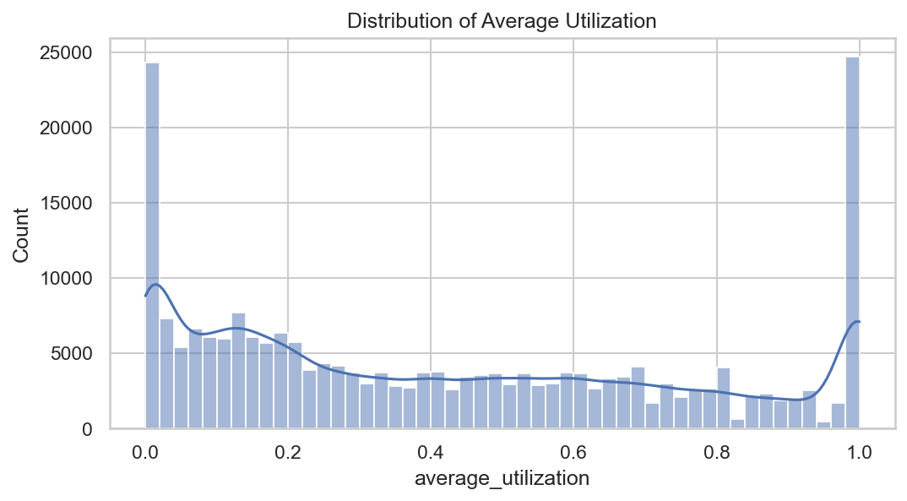
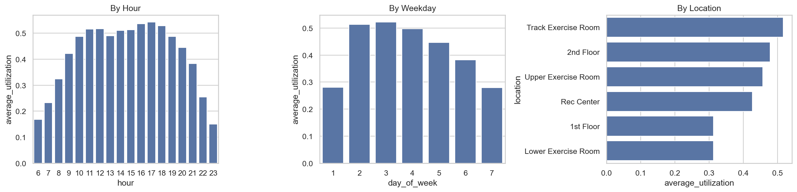
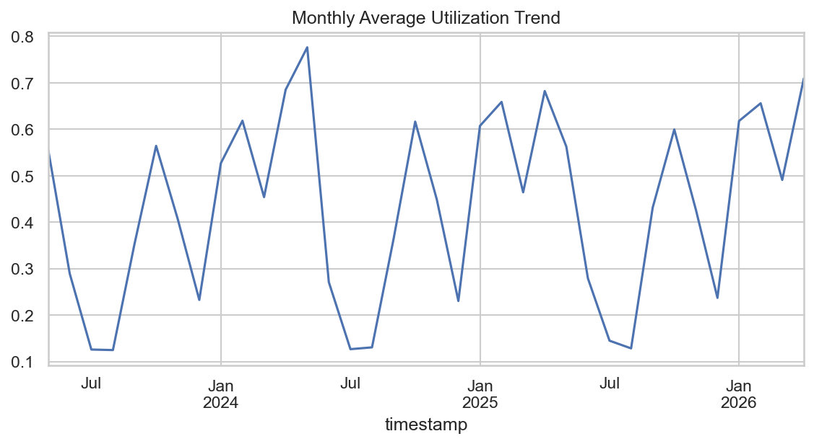
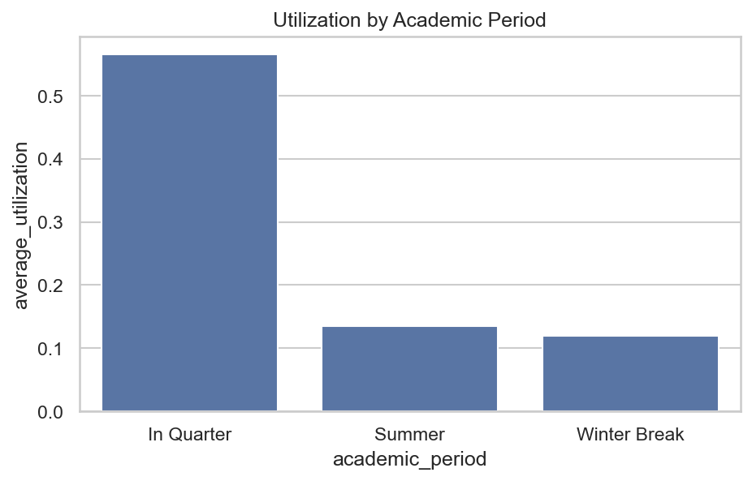
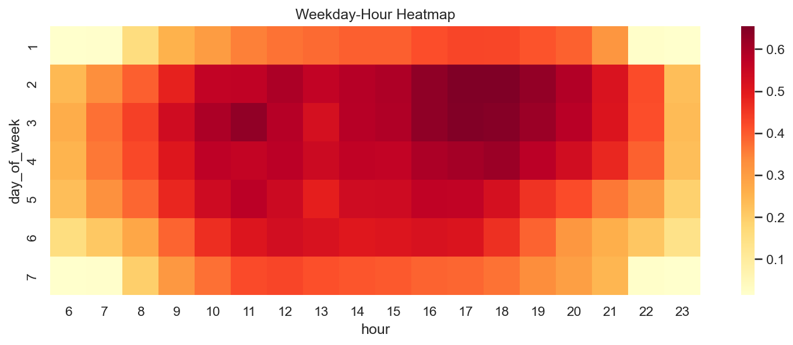
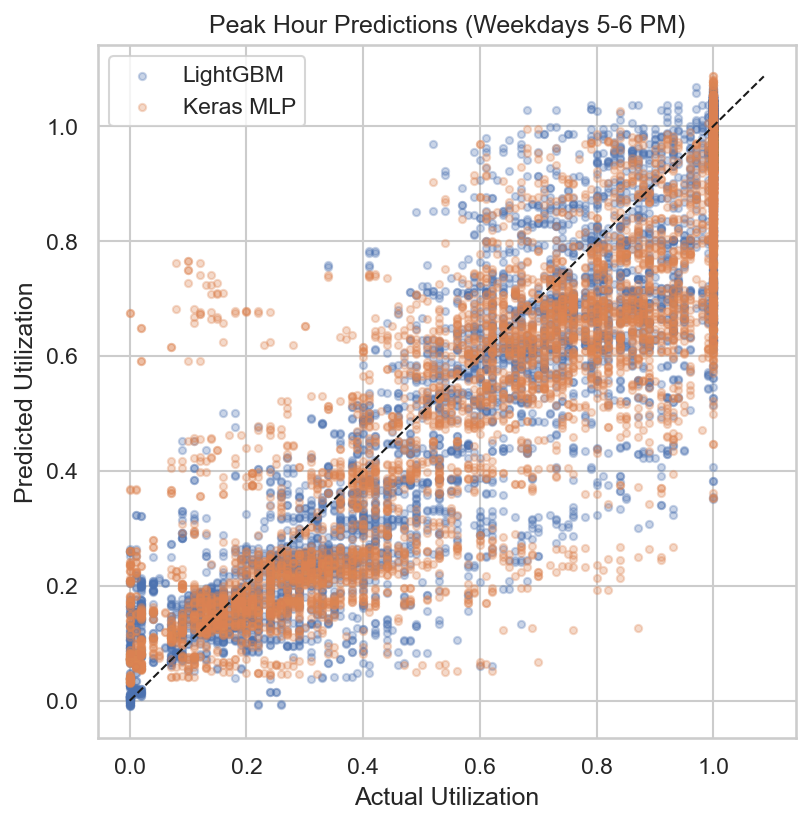
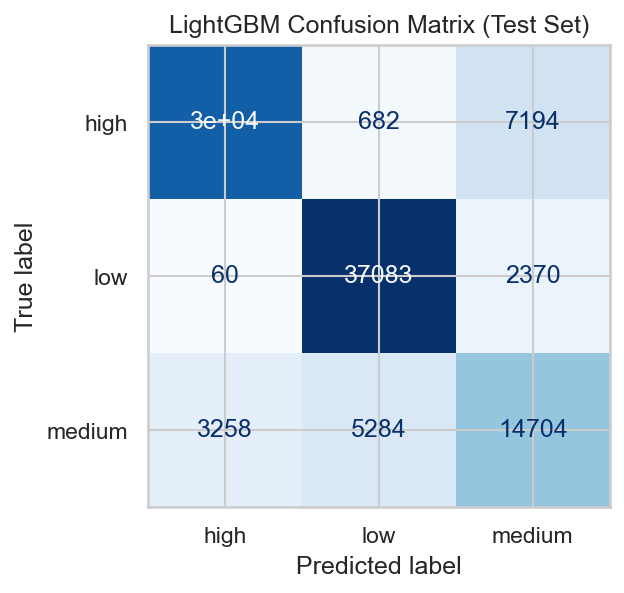

Advanced Machine Learning Final Project
The Cal Poly Recreation Center is one of the most heavily used student facilities on campus, yet students often have no reliable way to know how crowded it will be before they arrive. Long lines, full weight rooms, and packed cardio areas create frustration and can discourage students from using a resource they already pay for.
This project addresses a practical question: Can we predict how busy the Rec Center (and specific areas within it) will be at a given date and time?
We built two complementary prediction tools:
These predictions can support student planning (“When is the best time to go?”), Rec Center staffing decisions, and future integration with a mobile app or website.
The data comes from Occuspace, a occupancy-analytics platform that estimates how many people are in tracked spaces. We used Cal Poly Rec Center exports collected every 30 minutes from 6:00 AM to 11:30 PM, spanning May 2023 through April 2026.
After cleaning, the modeling dataset contains 223,283 observations across six locations:
| Location | Role |
|---|---|
| Rec Center (overall) | Whole-facility crowding |
| 1st Floor | General floor traffic |
| 2nd Floor | General floor traffic |
| Lower Exercise Room | Strength/cardio area |
| Upper Exercise Room | Strength/cardio area |
| Track Exercise Room | Track and adjacent equipment |
Our analysis of three years of usage data revealed clear, actionable patterns.
Average utilization across all locations and times is 0.44 (44% of capacity), with a median of 0.35. The distribution is right-skewed: most intervals are moderately busy, but a meaningful share of periods are very crowded.

Usage is lowest in the early morning and late evening. Crowding builds through the afternoon and peaks between 4:00 PM and 6:00 PM, with 5:00 PM showing the highest average utilization.

Monday and Tuesday are the busiest days, followed by Wednesday. Saturday and Sunday are consistently quieter — roughly 15–20% lower average utilization than midweek days.
Not all areas are equally crowded. The Track Exercise Room averages 0.58 utilization, followed by the 2nd Floor (0.52) and Upper Exercise Room (0.49). The 1st Floor and Lower Exercise Room are the least crowded at roughly 0.31 each — useful alternatives when popular areas are full.

Monthly trends show visible dips during summer and winter break, and higher usage during active academic quarters. August 2023 and summer months consistently show lower utilization, while May 2024 showed the highest monthly average — likely reflecting pre-finals and end-of-quarter activity.


A heatmap of weekday versus hour confirms that weekday late afternoons are the hottest windows, while weekend mornings and late evenings are consistently quieter. These interaction patterns motivated our use of flexible, nonlinear models rather than simple linear formulas.

We treated this as a forecasting problem: the model learns from past usage and predicts future periods it has never seen. Data was split by time:
| Split | Period | Purpose |
|---|---|---|
| Training | May 2023 – June 2024 | Learn historical patterns |
| Validation | July – December 2024 | Tune model settings |
| Test | January 2025 – April 2026 | Final unbiased evaluation |
We deliberately avoided random train/test splits, which would mix future data into training and overstate accuracy.
Beyond raw time and location fields, we engineered:
We excluded peak occupancy and peak utilization from predictors because they describe the same 30-minute window as the target and would inflate performance artificially.
Regression (predict exact utilization):
| Model | Description |
|---|---|
| Historical mean baseline | Average utilization by location × weekday × hour |
| Ridge regression | Linear model with regularization |
| Random Forest | Ensemble of decision trees |
| LightGBM / CatBoost | Gradient boosting (state-of-the-art for tabular data) |
| Keras MLP | Neural network with two hidden layers |
| Stacking ensemble | Combines LightGBM, CatBoost, and MLP via a meta-learner |
Classification (predict low / medium / high):
| Category | Threshold |
|---|---|
| Low | Utilization below 0.30 |
| Medium | 0.30 – 0.60 |
| High | Above 0.60 |
These cutoffs align with the data median (0.35) and mean (0.44), giving intuitive “quiet / moderate / crowded” labels.
Models compared: logistic regression, random forest, LightGBM, CatBoost, and a Keras neural network classifier.
All models were tuned on the validation period before final test evaluation.
| Model | RMSE | MAE | R² |
|---|---|---|---|
| Stacking ensemble | 0.123 | 0.089 | 0.872 |
| CatBoost | 0.125 | 0.088 | 0.867 |
| LightGBM | 0.128 | 0.088 | 0.862 |
| Random Forest | 0.134 | 0.090 | 0.848 |
| Keras MLP (neural network) | 0.143 | 0.100 | 0.826 |
| Ridge regression | 0.219 | 0.175 | 0.593 |
| Historical mean baseline | 0.289 | 0.247 | 0.291 |
How to read these metrics:
Tree-based models (LightGBM, CatBoost, Random Forest) outperformed the neural network on this dataset. This is a common finding for structured tabular data with strong categorical interactions (location × hour × weekday). The neural network still beat linear baselines by a wide margin but did not justify its added complexity over gradient boosting alone.
The stacking ensemble achieved a modest improvement over the best individual model (RMSE 0.123 vs. 0.125 for CatBoost alone), suggesting some benefit from combining diverse model types, though the gain is small relative to the engineering effort.

| Model | Accuracy | Macro-F1 |
|---|---|---|
| CatBoost | 81.9% | 0.793 |
| LightGBM | 81.3% | 0.787 |
| Random Forest | 81.3% | 0.784 |
| Keras MLP | 80.4% | 0.779 |
| Logistic regression | 70.9% | 0.658 |
Macro-F1 is our primary classification metric because it weights low, medium, and high usage classes equally — important since high-crowd periods are less frequent but most valuable to predict correctly.
CatBoost correctly classifies usage level about 82% of the time on held-out future data, with strong performance across all three categories.

Adding academic calendar flags (summer, breaks, finals) improved LightGBM regression RMSE from 0.145 to 0.128 on the test set — a meaningful gain that confirms campus schedule effects are real and worth modeling.
For students: - Visit early morning (before 10 AM) or weekends for the lowest crowding. - Avoid Monday–Wednesday, 4:00–6:00 PM if possible. - If the Track Room or 2nd Floor is full, try the Lower Exercise Room or 1st Floor — they average roughly half the utilization.
For Rec Center operations: - Use predicted peak windows to align staffing and equipment availability with expected demand. - Publish a simple low / medium / high forecast by location and hour — the classification model supports this directly. - Consider integrating predictions into the Rec Center app or website as a “busyness forecast” feature.
This report accompanies the full reproducible analysis in the Rec Center GitHub repository.